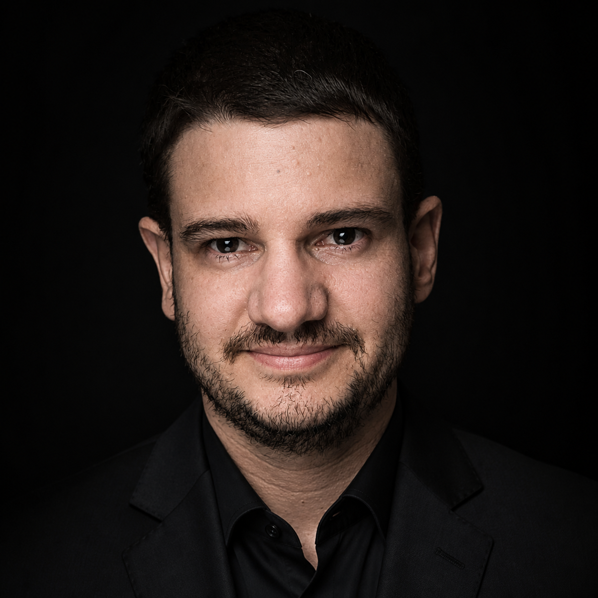

About Me

Electronic Engineer | Hardware Design, PCB & IoT | Altium, C++, Python | Embedded Systems Development
Electronic Engineer specializing in turning complex ideas into functional, reliable hardware products. I sit at the intersection of firmware and physical design, focusing on creating systems that bridge the gap between software and hardware.
My background is built on hands-on experience, from developing automated testing tools at Mirgor to creating specialized electronics for industrial and laboratory environments. I don't just design circuits; I build solutions. Whether it's designing custom PCBs, implementing IoT connectivity, or optimizing embedded firmware in C/C++ and Python, I ensure that my work is as robust as it is efficient. I love the process of taking a product from an initial concept through the prototype phase and finally into production, having navigated the challenges of PCB layout, FPGA-based control, and environmental system integration along the way.
What sets me apart is my versatility. Because I am comfortable with both low-level control systems and high-level automation, I can anticipate how design decisions will impact the final product’s performance. I enjoy solving technical puzzles—like emulating high-speed pulses for PMTs or designing complex power converters—and I am always looking for the most efficient way to get a project from "it works in the lab" to "it’s ready for the market".
I’m currently looking for a challenging role where I can apply my experience in hardware design and product development to create impactful technology. If you are working on innovative hardware projects and need an engineer who takes ownership of the technical lifecycle, I’d love to connect.
You can reach me at agustinrovero@gmail.com or send me a message here on LinkedIn.